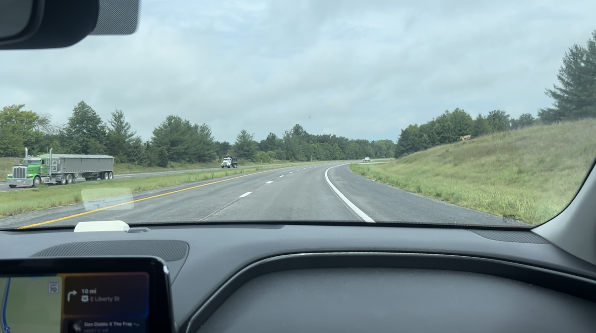
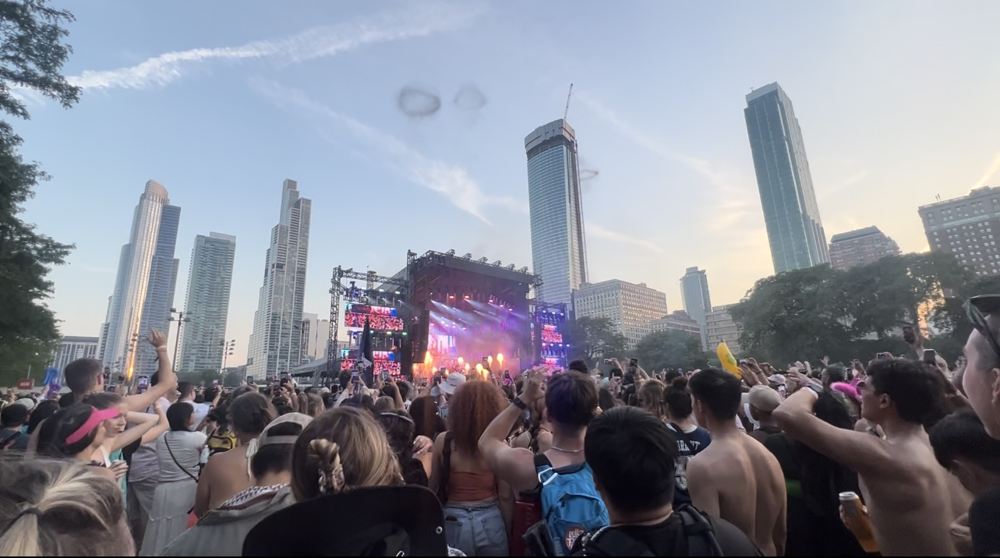
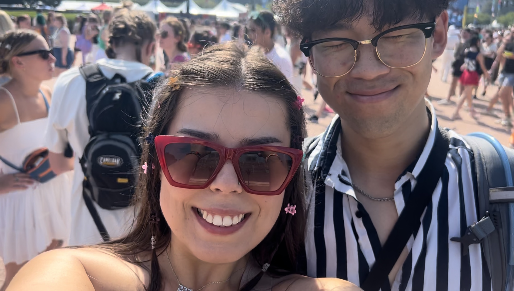
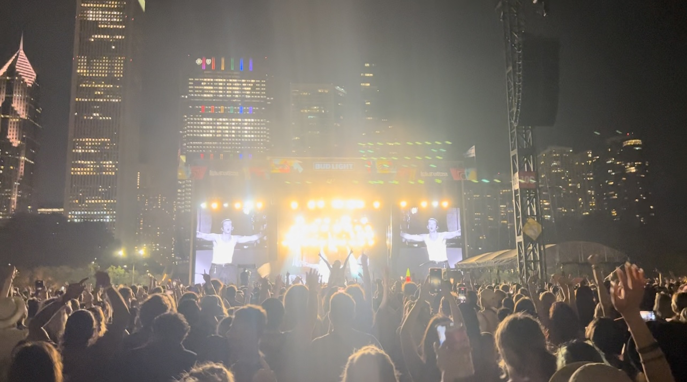
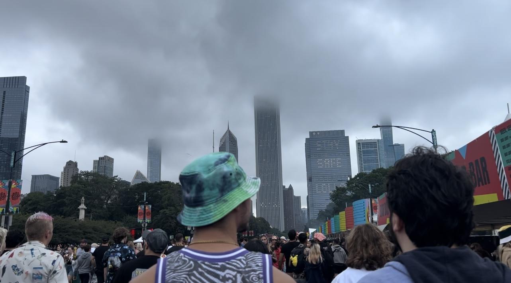
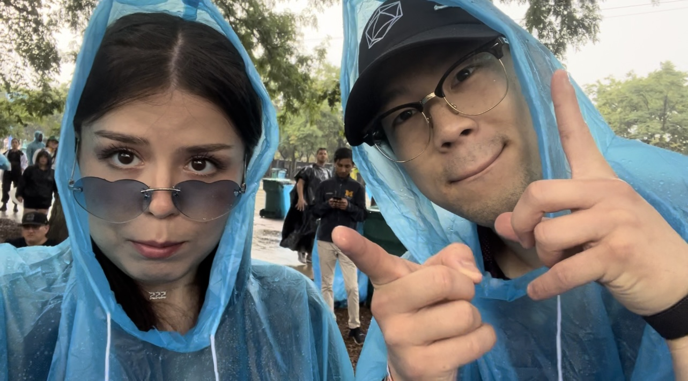
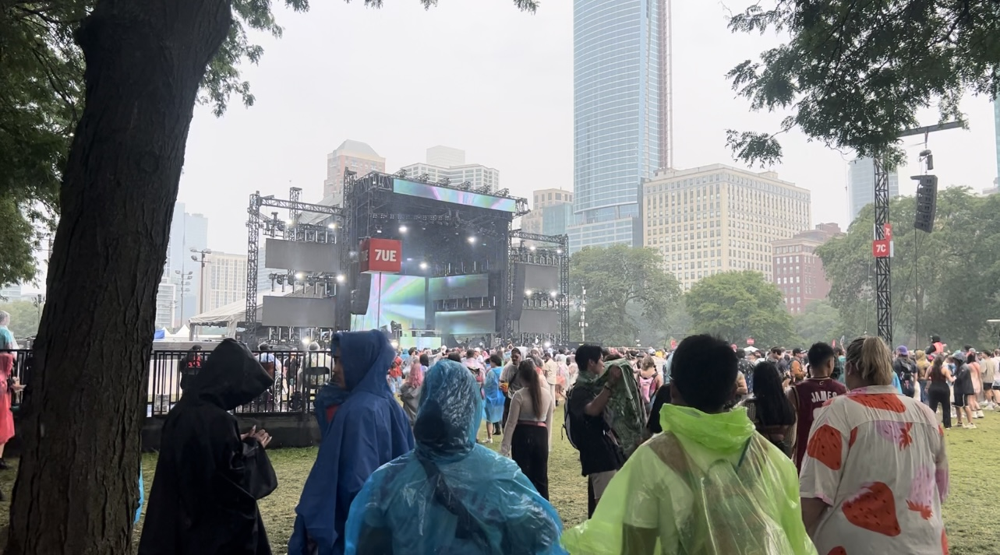

As a longtime lover of music and the music community attending my first festival has been high on my to-do list and, in the summer of 2023, I was finally able to check it off the list after attending Lollapalooza. From hot and sunny days to rain ponchos and muddy grounds, Lollapalooza 2023 was a weekend I will never forget.

The road to Lollapalooza was long. A 6 and a 1/2 hour drive stood between me and the music.

The Chicago skyline being the backdrop to the entire festival adds to the magical feeling of seeing your favorite artists live.

Smiling faces abound as people gather at the festival grounds.

The most spectacular night. The 1975 headline night 2 of Lollapalooza.

Gloomy skies welcome festival goers on the 3rd day.

A little rain won’t stop this parade, plastic ponchos are a must-have item as rain pours down on the festival grounds.

The final day of Lollapalooza saw more rain but that surely didn't stop anyone from coming out and celebrating together.